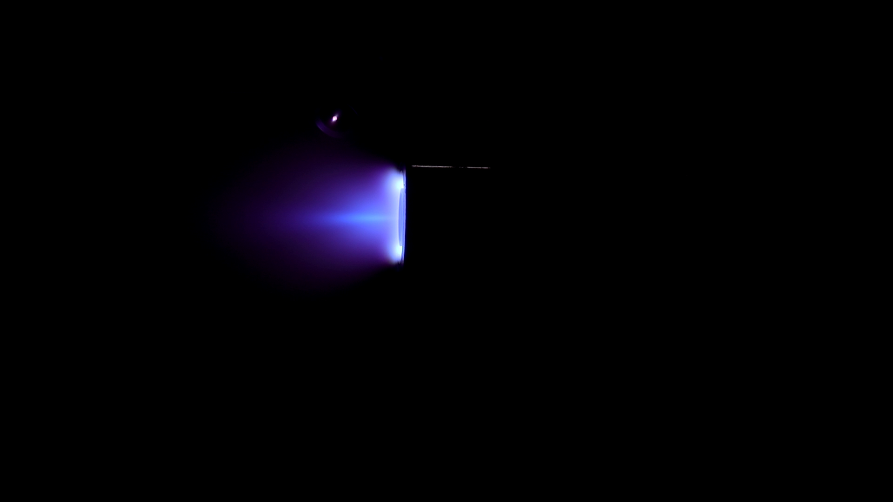
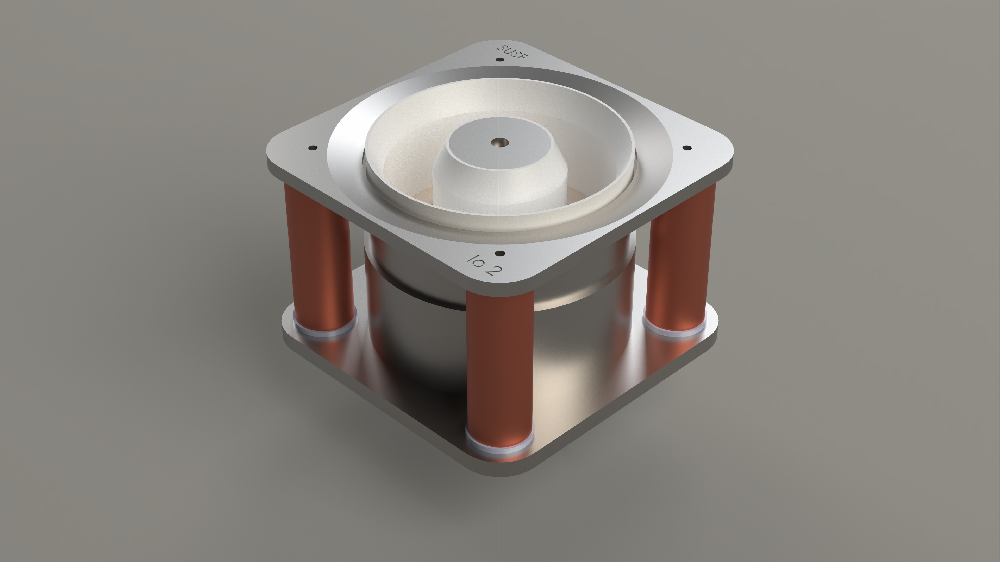
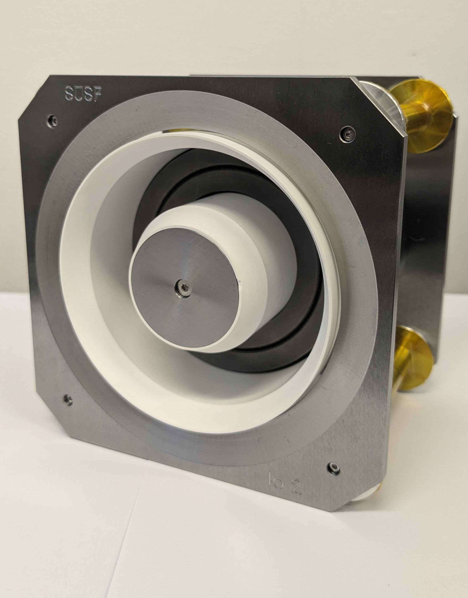

Projects
Io-1
Io-1, the first thruster developed by SUEP and the foundational technology from which all of our thrusters have been developed. This thruster was the first to be developed by undergraduate students as part of a society project, and it has taught us valuable skills providing us with knowledge we are using to develop our next thrusters. It was operating on Krypton gas at the David Fearne Electric Propulsion Laboratory, at the University of Southampton.

The thruster was unable to operate steadily, and so we were unable to acquire hard data points. Despite this, we can still infer certain aspects of its performance. Based on prior magnetic field tests, the magnetic field is lopsided, resulting in a non ideal field topology, since for optimum performance, the field should be mostly radial. This directly resulted in the plume being quite divergent, as shown in Figure 1, likely causing many ions to have significant non-axial components in their velocities and not contributing to the overall thrust of the engine. It can also be seen that the plasma appears very dense close to the exit plane of the thruster, indicating that most of the ionisation and acceleration is occurring closer to the exit plane, which could explain instabilities and poor performance.
Io-2
Io-2 is the natural successor of Io-1 and builds directly from its legacy. Download Io-2 Report


Io-2 Test
Zeus


Zeus is even cooler.